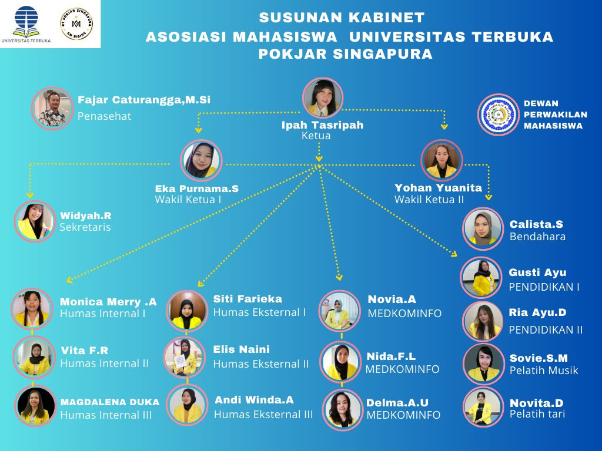
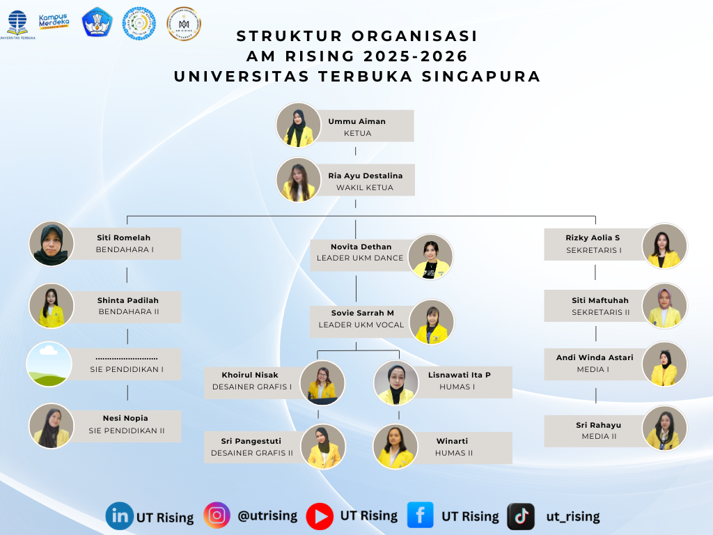

"
 Siti Mujiati, S.S co Founder 1 AM RiSing
Siti Mujiati, S.S co Founder 1 AM RiSing
 Maimuhah Subagio, S.S co Founder 2 AM RiSing
Maimuhah Subagio, S.S co Founder 2 AM RiSing
 Indah Pravitasari, S.M co Founder 3 AM RiSing
Indah Pravitasari, S.M co Founder 3 AM RiSing

structure organisasi am rising 2024-2025

structure organisasi am rising 2025-2026
 am 2025-2026 setelah pelantikan
am 2025-2026 setelah pelantikan